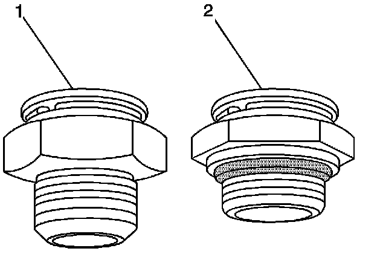
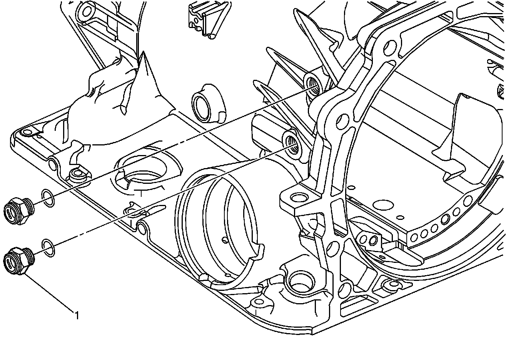

A/T - Cooler Line Fitting Applications
Bulletin No.: 08-07-30-004Date: January 31, 2008
INFORMATION
Subject:
4L60-E, 4L65-E, 4L70-E HYDRA-MATIC(R) Automatic Transmission (RPOs M30, M70 M32, M33, MK2 MD6)
Oil Cooler Fitting Change
Models:
1997-2008 GM Light Duty Trucks (Including Saab)
with 4L60-E, 4L65-E, 4L70-E HYDRA-MATIC(R) Automatic Transmission (RPOs M30, M70, M3, M33, MK2, MD6)

Aluminum cooler line fittings - These new fittings (2) cannot be used on earlier cases because the threaded hole is not the same size. Old style fittings (1) will continue to be available through SPO parts.
Service cases will be the new case and fittings. The old cases with the old thread design will not be maintained for service. The connection on the hose side will accept both the short snout and the newer longer snout cooler hose assemblies.

The fittings (1) have a new torque specification of 20 N.m (14 lb ft). They also have one inner and one outer "0" ring that are not serviced separately. The new thread size 9/16-1a UNF-2A (1) was implemented on 11-29-07 or Julian date 333.

Disclaimer